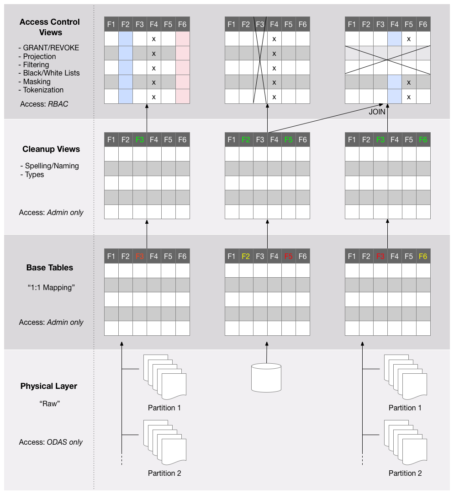

Schema Design
Goal and Audience
This document is for DBAs, developers, and data architects who are trying to understand the schema design adjustments necessary when working with the Okera Platform.
Introduction
As shown in the Architecture Overview, the Okera Platform is a distributed, scalable, efficient, and high performance data access system, which includes a Schema Registry that maps raw data into tables. While these schemas can be arbitrarily complex, not all of the functionality should be delegated to Okera, but rather some should be handled in more specific clients, such as SQL engines. For additional information on external views, please refer to the Supported SQL documentation.
Layers
In working with Okera, it is recommended to adopt a specific design approach when defining datasets. You should think of schemas in terms of the following layers:
- Physical Layer
- Base Table Layer
- Cleanup View Layer
- Access Control Layer
The diagram below shows this in greater detail and we will discuss the layers in the next sections.

Physical Layer
The physical layer consists of storage in its raw format as files on S3 or HDFS, or as a database table in an RDBMS. For file-based storage, there is usually one or more files in one or more directories. The latter may convey special meaning, such as partitions supported by Hive.
It is important to note that in order to ensure data access and governance policy enforcement, the Okera Platform and administrators should be the primary user to this layer.
Base Table Layer
The base table layer defines the first set of metadata by mapping the raw data, as-is, into Okera’s Schema Registry. Only tables are defined at this level and are referred to as base tables. Their schema comes directly from the source retaining all the naming and data type declarations.
Example: Creating an external base table over the raw data
CREATE EXTERNAL TABLE sales.transactions_raw(
txnid BIGINT,
field_87 STRING,
field_06 STRING,
field_12 STRING,
field_73 STRING,
field_33 STRING,
ip STRING)
COMMENT 'Raw online transactions'
ROW FORMAT DELIMITED
FIELDS TERMINATED BY ','
LOCATION 's3://sales-data/transactions';
You may note that some fields are arbitrarily named and all of them are defined as type STRING.
In this example, we assume that some fields are of a non-string type.
While still a valid statement, this CREATE statement is not ideal for direct querying.
Access to these base tables is restricted to Okera administrators (or by someone granted administrative rights). No direct access by any user or application is allowed.
Cleanup View Layer
The cleanup view layer is an applied view on top of the base table defined to fix any immediate table issues. In continuing with the example, we can reorder fields to comply with some company policies, cast the field types, and rename arbitrary fields into readable names.
Example: Creating a cleanup view over a base table
CREATE VIEW sales.transactions_clean AS
SELECT txnid,
field_12 AS dt_time,
field_33 AS sku,
cast(field_87 AS INT) AS userid,
cast(field_73 AS FLOAT) AS price,
field_06 AS creditcard,
ip)
FROM sales.transactions_raw;
There is a strict 1:1 mapping between base table and cleanup view. There are no JOINs performed at this level; only schema transformations.
No user will be given access to cleanup views that contain sensitive data; only dedicated staff, such as administrators or data stewards are allowed access. In the case of cleanup views that contain only publicly accessible data, it is permissible to grant direct access to non-administrative users as well.
Access Control View Layer
The access control view layer is the final layer where we define user access to the data through the use of special views that apply filters, projections, masking, and tokenization.
Continuing with the example, we can define a new access view over the cleanup view created in the previous section to apply tokenization and masking functions that allow only the user admin to gain full access to the field data.
All other users would see only the redacted content.
Example: Creating an access view with masking and tokenization
CREATE VIEW sales.transactions AS
SELECT txnid,
dt_time,
sku,
if (has_access('sales.transactions_clean'), userid, tokenize(userid)) as userid,
price,
if (has_access('sales.transactions_clean'), creditcard,mask_ccn(creditcard)) as creditcard,
if (has_access('sales.transactions_clean'), ip, cast(tokenize(ip) as STRING)) as ip
FROM sales.transactions_clean;
We have only implicitly dealt with the Okera Schema Registry thus far.
This service is responsible with storing the platform-wide dataset metadata.
Next, we will allow access to those datasets through the Okera Policy Engine in the form of GRANT statements.
All access to databases and datasets (commonly referred to as objects) is assigned to arbitrary roles.
These roles are then assigned to groups of known users, enabling the so-called role-based access control.
The user groups are provided using a variety of sources, including Active Directory (AD), Lightweight Directory Access Protocol (LDAP), and JSON Web Token (JWT).
The next example creates the analyst role and assigns it to a user group.
Example: Creating a role and assigning it to a user group
CREATE ROLE analyst_role;
GRANT ROLE analyst_role TO GROUP analysts;
The last step in the example is another GRANT statement to give read access to the newly created role.
Example: Granting read access to a role
GRANT SELECT ON TABLE sales.transactions TO ROLE analyst_role;
NOTE: The examples show Hive QL syntax. Hive does not distinguish between Okera views or tables, which is why the
GRANTstatement is on a table instead.
The above example provides an overview of schema design best practices. While your organization’s needs may vary, these steps give the best framework to create and manage data through the Okera Platform.
The access view is designed to execute the necessary table joining, but should not be used for any analytical processing (see Supported SQL for supported functionality).
A common use-case for a JOIN executed in the Okera Platform is GDPR white-/blacklist filtering, which uses a smaller table with, for example, users who have opted out of their data use for non-essential processing.
Such a filter view would contain a SELECT statement that joins the main user table and the filter table, removing all users that have revoked the right to use their data prior to analysis.